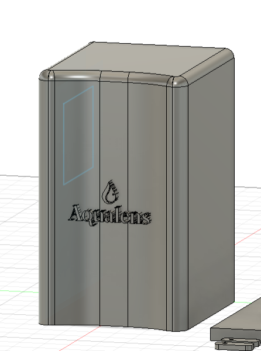

AquaLens Particulares
La solución perfecta para el control del alcantarillado en hogares
Descripción General
AquaLens Particulares es nuestra solución diseñada específicamente para hogares y pequeñas propiedades. Con una interfaz intuitiva y fácil de usar, permite controlar hasta 3 dispositivos desde cualquier smartphone, ofreciendo tranquilidad y control sobre el sistema de alcantarillado de su hogar.
Características Principales
- Control desde cualquier dispositivo móvil
- Informes de estado detallados
- Notificaciones instantáneas
- Historial de mediciones
- Mantenimiento preventivo

Hardware
Procesador ESP32, sensores de alta precisión, carcasa resistente al agua y polvo.
Conectividad
WiFi 2.4GHz, Bluetooth 5.0, conexión segura a la nube.
Aplicación Móvil
Interfaz intuitiva, notificaciones push, acceso remoto seguro.